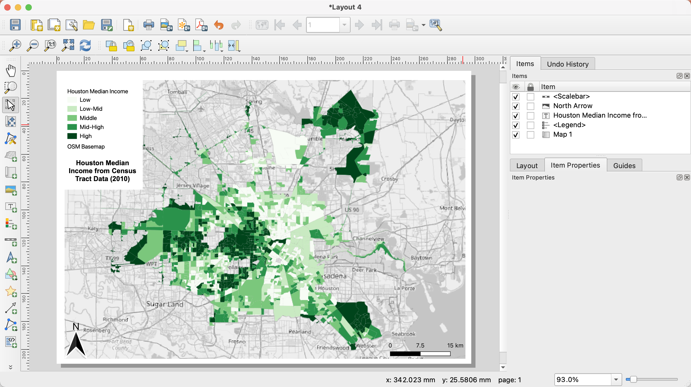

Warm-up:
How many distinct applications did you use before arriving today? Count them - alarm clock, messaging, maps, music, email, a bank app, a learning management system...
Application software is software that performs tasks for users - writing a paper, booking an appointment, analyzing a dataset. This is in contrast to system software, which manages the computer itself (we'll cover that next lecture).
From an informatics point of view, applications are where people, data, and organizational goals meet.
Software must support the entire information system:
There are thousands of applications, so it helps to sort them. We'll use two lenses: what the application is for (purpose) and how it reaches the user (delivery). Delivery itself has two questions - which device or interface you use, and who hosts and maintains the software.
| Category | What it does | Examples |
|---|---|---|
| Productivity | General-purpose document and data work | Word processors, spreadsheets, presentation software |
| Enterprise Systems | Run the core operations of an organization | ERP (SAP), CRM (Salesforce), supply chain management |
| Domain-Specific | Serve the needs of one field or profession | Electronic health records (EHR), GIS, library systems, SPSS / R |
| Creative and Media | Create and edit images, audio, and video | Photoshop, GIMP, Audacity, DaVinci Resolve |
| Communication and Collaboration | Help people talk to and work with each other | Email, Slack, Zoom, Microsoft Teams, shared workspaces (Notion) |
Enterprise Acronyms
If you work in a certain domain, you will start to learn its jargon. This includes acronyms, such as the below. Each has its own class of software tools:
Domain-Specific Software: GIS

Source: Wikimedia Commons (CC0)
A Geographic Information System (GIS) such as QGIS or ArcGIS combines map data with other data - here, census income data - so that patterns can be seen spatially. City planners, public health departments, and emergency services all depend on GIS software.
"Delivery" mixes two independent questions. Answer each separately - the same product can sit in more than one cell across the two tables.
Where do you interact with the application?
| Platform | Where you use it | Examples |
|---|---|---|
| Desktop / installed | Your computer | Microsoft Excel (desktop), GIMP |
| Mobile | Your phone or tablet | Instagram, your bank's app |
| Web (browser) | Any device with a web browser | Google Docs, Canvas LMS |
Many products ship on more than one platform. Microsoft Teams, for example, is a desktop app, a mobile app, and a web app - all sharing the same cloud data.
Who runs and maintains the software behind the scenes?
| Hosting Model | Who runs it | Who maintains it | Examples |
|---|---|---|---|
| Locally installed / on-premises | Your machine or your organization's servers | You / your IT department | GIMP, a hospital's on-site EHR server |
| Software as a Service (SaaS) | The provider's cloud, by subscription | The provider | Salesforce, Microsoft 365, Zoom, Google Docs |
Platform and hosting are not the same axis. A desktop app can still be SaaS (Outlook connected to Microsoft 365). A web app can be hosted by your own IT department rather than sold as a subscription product.
Who Controls SaaS?
With locally installed software, you decide when (or if) to update. With SaaS, the vendor can change features, pricing, or terms of service overnight - and your data lives on their servers. The shift to SaaS has quietly moved control from the user to the provider.
Activity: The Taxonomy Grid
In class, let's place five applications you use regularly on the grid below (purpose × platform). Then, for each one, say whether it is mainly locally hosted or SaaS.
| Desktop | Mobile | Web | |
|---|---|---|---|
| Productivity | |||
| Enterprise | |||
| Domain-Specific | |||
| Creative and Media | |||
| Communication |
.png){kind=link}